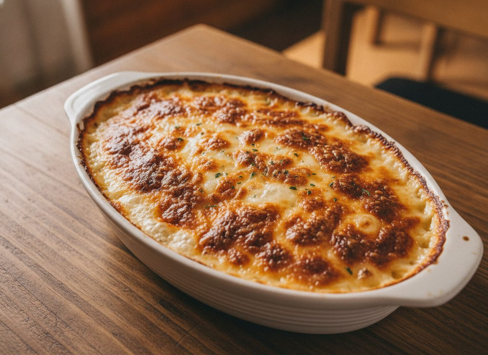
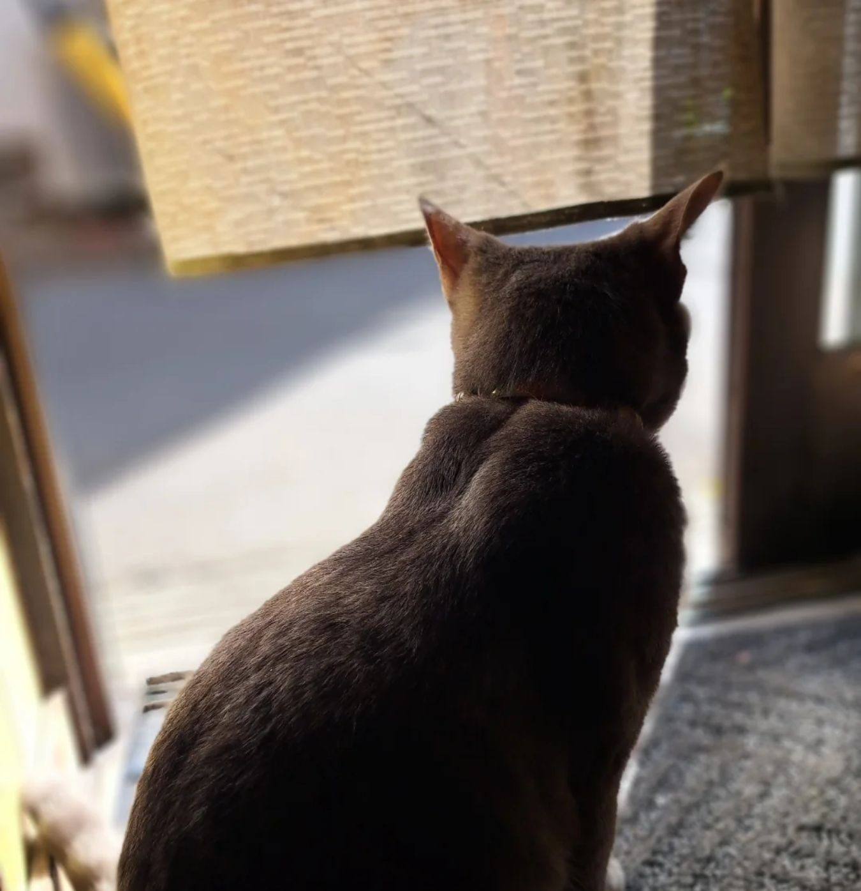
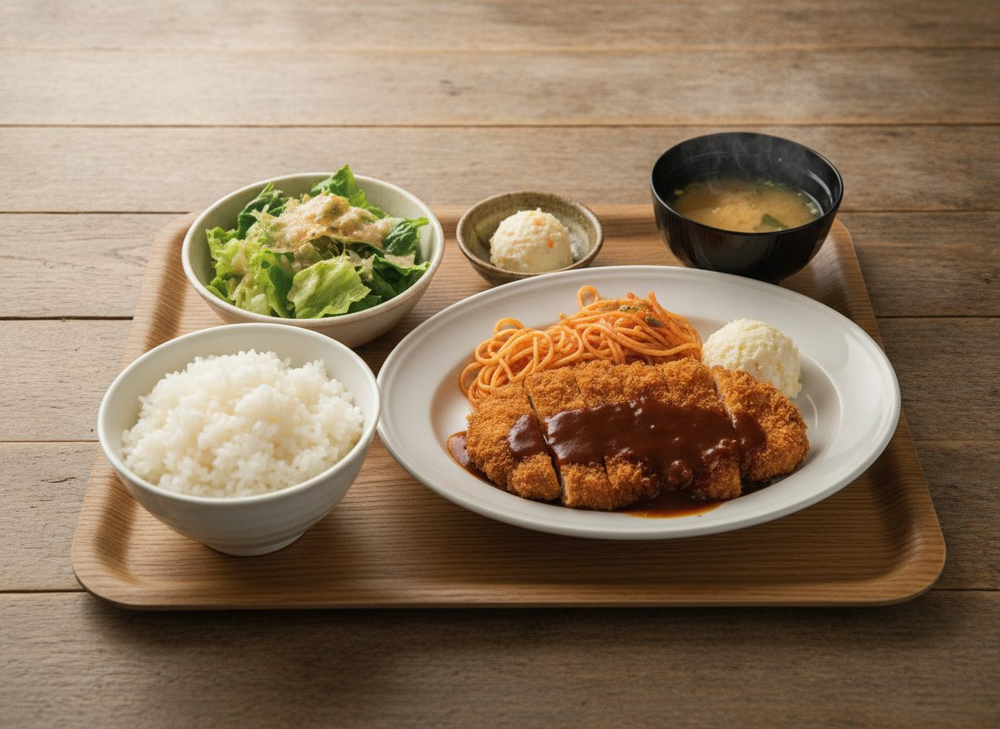

洋食の一皿
グラタン、肉の皿、揚げもの。地域の紹介記事には、卵料理が「どこのホテルのオムレツよりも美味しい！」と評判だと書かれています。
YOSHOKU & DINING — KAMIFUKUOKA
カウンター七席の、街の洋食屋です。
毎週金曜日は、ワンコインランチ。
11:00ごろ〜23:00ごろ（中休みのある日も）
上福岡駅 東口から徒歩約5分
※猫店長以外の画像はイメージです
ABOUT
上福岡駅の東口から歩いて5分ほど。席はカウンターが七つだけの、小さなお店です。オーナーシェフの森田さんのお店で、洋食の一皿から手作りのピザまでが並びます。
クチコミには「安くて美味しい街の洋食屋さんです 飲み利用のお客さんもいます」「おじさんの作る料理は美味しいし、メニューが洒落てて、居酒屋風の店内とのギャップがまた良し！！」と書かれています。ごはんを食べに来る人も、一杯やりに来る人も、同じカウンターに並びます。
この段落の鉤括弧の引用は、Googleマップのクチコミより（引用中の絵文字は省略しました）。
オーナーシェフのお名前は、Instagram（@moritakamifuku）のプロフィールより。

FRIDAY & NEKO
毎週金曜日は、日替わりのワンコインランチ。その日のお品書きは、手書きの紙でお店のInstagramに上がります。
二階には猫店長の「しろっち」がいます。お店のInstagramには「猫店長（しろっち）もだいぶ大人っぽくなりました。遊んであげて下さい」とありました。
この段落の鉤括弧の引用は、Instagram（@moritakamifuku）の投稿より（引用中の絵文字は省略しました）。

おふくろの味も、
洒落た一皿も、同じ七席で。
※画像はイメージです
SHOP INFO
| 店名 | ダイニングキッチン もり田 |
|---|---|
| 住所 | 埼玉県ふじみ野市上福岡1-12-25 |
| アクセス | 上福岡駅 東口から徒歩約5分 |
| 営業時間 | 11:00ごろ〜23:00ごろ （中休みのある日もございます） |
| 定休日 | お電話でご確認ください |
| 席 | カウンター7席 |
| ご予約 | 承ります。貸し切りもできます |
| 駐車場 | なし |
| 電話 | 070-2308-0623 |
営業時間と定休日は、資料によって書かれていることが異なります。
地域の紹介記事には「月〜日 11:00〜23:00（店主の気まぐれ）」とあり、グルメサイトには中休みと木曜定休が載っています。
お出かけ前に、お電話でご確認いただけますと確実です。
CONTACT
ご予約・ご質問は、お電話またはInstagramへお気軽にどうぞ。
金曜日のワンコインランチのお品書きは、Instagramでお知らせしています。